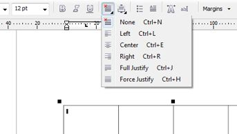
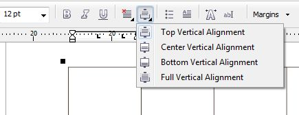
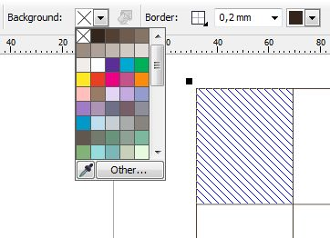
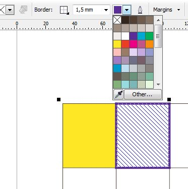

Как работать с инструментом таблица
serggarelikov / 17.03.2012, 19:11/00:41
Форум:
Версия программы:
15.2.0.695 (hf4)
Доброго всем дня!
У меня вопрос. Как работать в corel draw с инструментом таблица?
а именно интересует:
Как можно выравнивать текст внутри ячейки
И как заполнять цветом нужную ячейку и ее границы.
Спасибо!
Во-первых, немного надо почитать справку и т. д. Это простейшие вещи, которые можно делать с таблицей в corel draw.
1. Выравнивание в ячейке. Выделите ячейку и на Панели свойств задайте выравнивание.


На рис. 1 показано, как задать выравнивание по горизонтали, на рис. 2 - по вертикали.
2. Заливка цветом и изменение цвета границы. Выделяете ячейку (ячейки).


На рис. 3 показано задание цвета фона, на рис. 4 - границы ячейки, тут же видно, что можно менять толщину линий границы.
P. S. На скриншотах видна также часть созданной таблицы и примененные к ней изменения.
Закрашивать можно, и даже легче, выделяя инструментом Shape tool